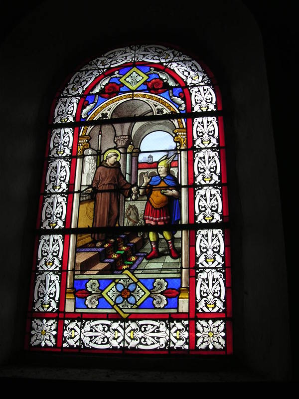
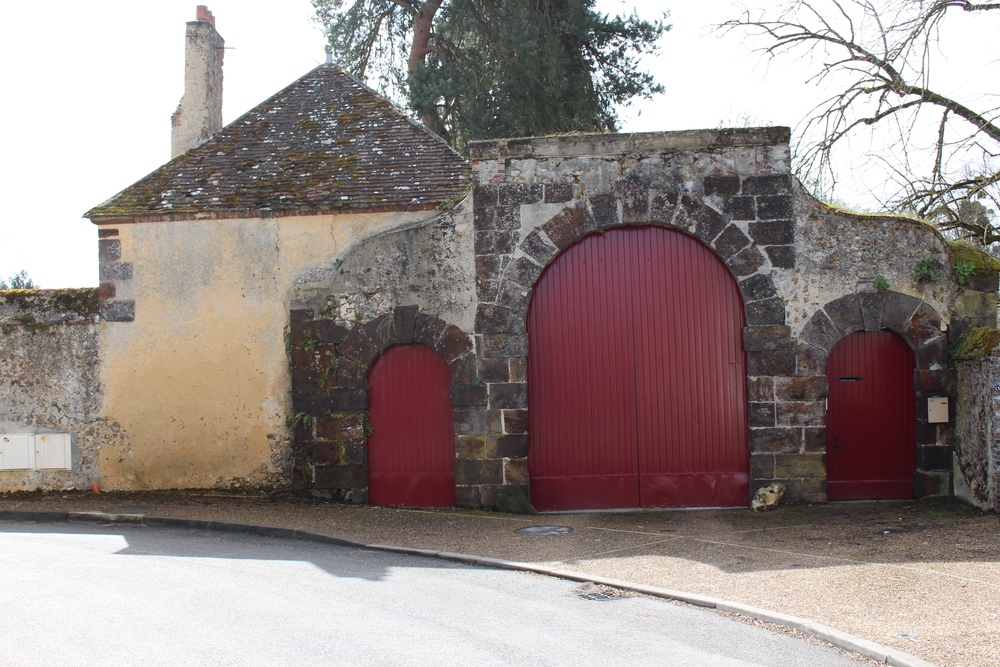
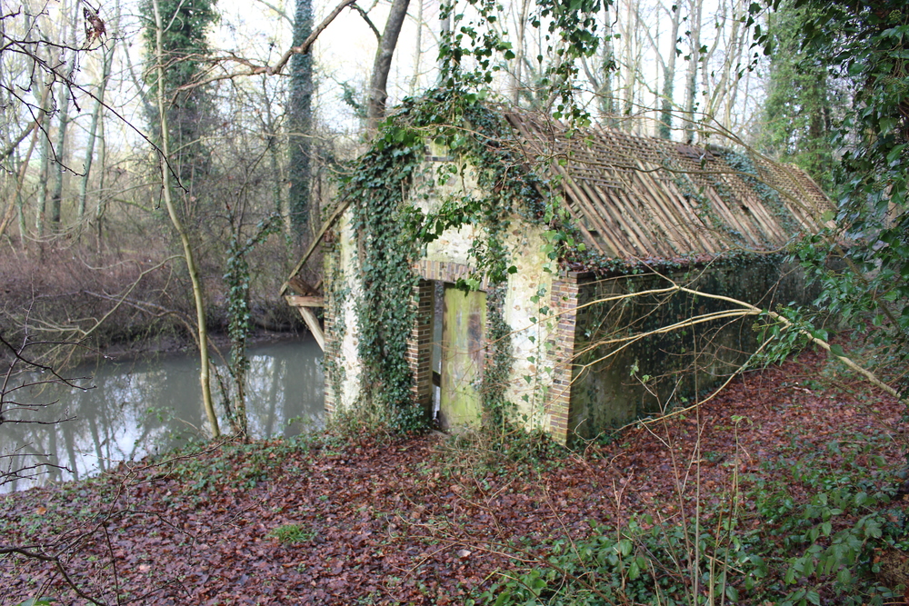
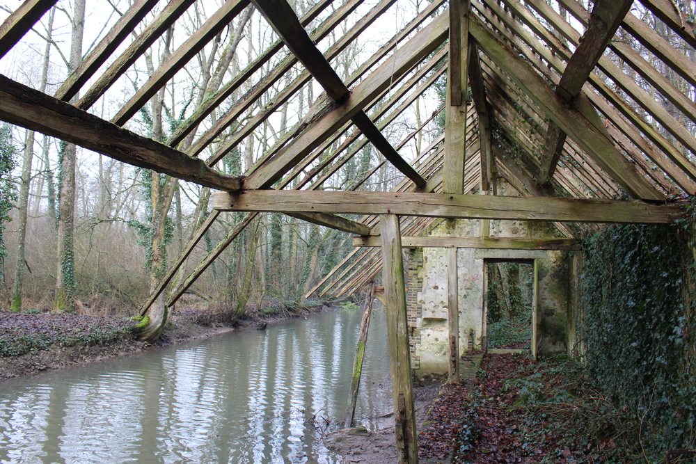
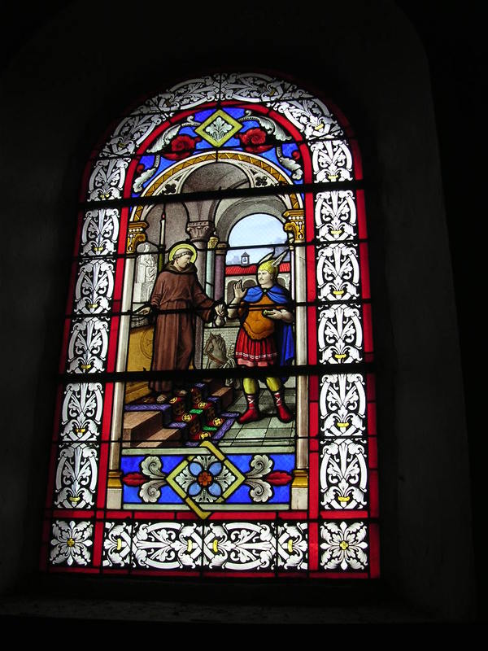
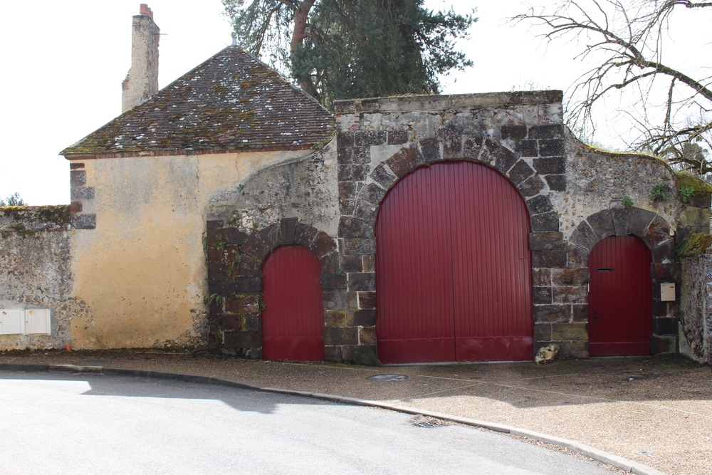
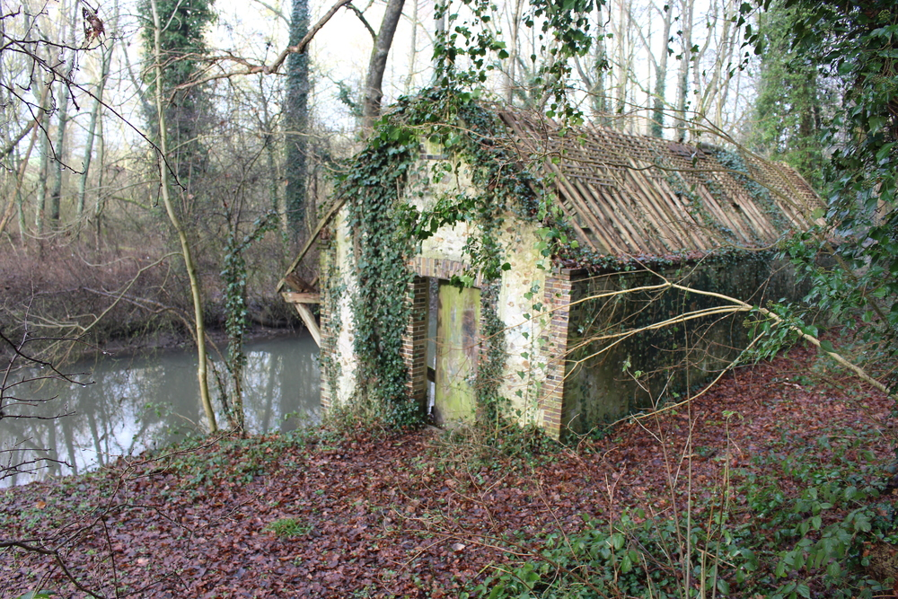
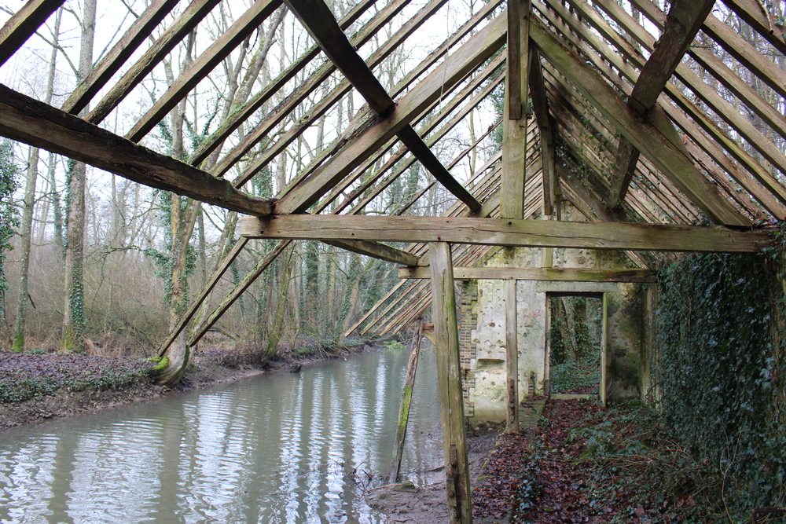

Belhomert et son passé
A l’origine de l’emplacement même de Belhomert poussait une forêt qui recouvrait entièrement la région. Celle de Senonches en est un reste et un témoignage encore bien vivant.
C’est dans ce lieu encore sauvage, au bord de l’Eure qu’en 558, un certain Laumer s’installa à l’endroit même où plusieurs siècles plus tard fut construit une abbaye de femmes de l’Ordre de Fontevrault.
Laumer naquit à Neuville-La-Mare près de Châteauneuf-en-Thymerais. Pendant son enfance il garda les troupeaux de ses parents, puis il fut conduit à Chartres pour y être instruit au sacerdoce par le prêtre Chérémir. Elève brillant dans les études, il fut nommé chanoine et économe de la toute nouvelle église de Chartres.
Mais le vœu pieu de Saint-Laumer était de se retirer loin du monde, dans un endroit solitaire pour y méditer en toute liberté. Arrivé donc dans ce lieu qu’il trouva certainement agréable à son goût, il se construisit un ermitage fait de branches d’arbres.
Sa solitude tant désirée fut de courte durée car après avoir accompli plusieurs « miracles » auprès de gens de passage, il devint très vite populaire dans la région. C’est ainsi que d’autres cellules comme la sienne se construisirent, ce qui forma une petite communauté religieuse.
D’après les historiens, il aurait séjourné à cet endroit près de 12 ans avant de le quitter pour s’enfoncer encore plus loin dans l’immense forêt du Perche.
Après son départ, ce lieu fut appelé « Beatus Launomarus » ou « Bellum Launomarii » que l’on peut traduire par « Bienheureux Laumer », d’autres transformèrent ces deux mots latins en « Théâtre de la guerre que Laumer fit aux païens ».
Par la suite, ces deux mots ‘en formèrent plus qu’un, « Bellummare », puis « Bellomare » et enfin « Belomer » en 1206.
Le souvenir du séjour de Saint-Laumer sur la commune est commémoré dans l’église Saint-Jean par un vitrail situé dans le cœur, côté gauche.
L'ancien blason
Créé en 1696 par d’Hozier, généalogiste du Roi, il est conservé à la bibliothèque de Paris. Voici les termes héraldiques : « D’Azur à un crucifix d’or, adextré de la Ste Vierge et senestré de Saint-Jean l’Evangéliste, le tout d’or », c’est l’ancien blason de l’Abbaye de Belhomert, dirigé sous le célèbre Ordre de Fontevrault. Cette Abbaye fut fondée en 1090 par Hugues de Chateauneuf en Thimerais. Elle subsista jusqu’en 1789.
Le nouveau blason
Crée en 1984 par Alain Boisseau à la demande du Conseil Municipal. Sur un fond d’Azur, comme l’ancien blason. En haut à gauche est représenté le blason du Perche. Belhomert ayant toujours été considéré comme faisant partie de la province du Perche-Thymerais. Le symbole principal, le porche, c’est-à-dire l’entrée principale de l’enceinte de l’Abbaye, sur l’emplacement même de l’ancien ermitage de Saint-Laumer en 558. Ce monument fut construit en 1657. En haut de celui-ci, une banderole où est inscrit : "Beatus Launomarus", c’est l’origine latine du nom de Belhomert et signifie « Bienheureux Laumer ».
L'église
Historique
L’église St-Jean est une construction datant du XIème siècle. Elle était rattachée à la base à une abbaye de femmes fondée par Hugues Ier (seigneur de Châteauneuf-en-Thymerais) en 1090. Ce prieuré de l’ordre de Fontevrault subsista jusqu’à la Révolution et fut vendu comme bien national. L’ordre de Fontevrault regroupe de nombreux prieurés, dont La Madeleine à St-Jean-de-la-Ruelle, Hautes-Bruyères à Saint-Rémy-l’Honoré, Poissy…
L’église fut consacrée en 1132 par Geoffroy de Lèves, évêque de Chartres (elle aurait servi auparavant de priorale à l’abbaye).
Mathilde, fille de Hugues Ier, fut la première abbesse de l’abbaye.
De nombreuses donations furent accordées à l’abbaye depuis sa fondation.
En 1790, l’ordre de Fontevrault fut dissolu et l’abbaye fut vendue en 1792 à Jean-Claude Lemaire qui la transforma en habitation.
Architecture
L’église est construite d’après une architecture typiquement rurale percheronne: sur les contreforts, on peut distinguer de la pierre des grisons (pierre constituée d'un amalgame de silex et d'argile, qui se forme en milieu forestier), de la petite brique rouge, qui sont des matériaux dits “pauvres” qui s’empilent et ne se taillent pas. On retrouve également ces matériaux par exemple sur l’église de Senonches, ou de La Puisaye.
Le clocher de l’église a été réhaussé en 1879 sur décision du conseil municipal en 1873. La façade est précédée d’un clocher-porche récent dont les bases semblent anciennes. A l’intérieur, on observe un unique vaisseau à charpente apparente et une voûte lambrissée en berceau brisé. Les murs sont garnis de boiseries en partie anciennes et vernies, comme les trois retables. Des ornements peints en haut des murs crépis ont été découverts lors de la restauration. Les bancs fermés ont été conservés et sont en bon état.
En 2013 la municipalité a décidé de créer un éclairage des vitraux afin de les mettre en valeur la nuit. Cet éclairage fonctionne du crépuscule jusqu’à 23h et se rallume de 6h jusqu'à l’aurore.
Le Porche
Jadis l’entrée de l’enceinte de l’Abbaye, maintenant ces belles portes romanes construites en 1657 sont encore bien conservées, la date est gravée sous la clef de voute de la petite porte de droite. Elles sont visibles au bout de la rue de l’Abbaye qui s’appelait autrefois la rue Saint Benoist. Accolée à celles-ci, sur la gauche, se trouve l’ancienne conciergerie.
Le Lavoir du bourg
Réhabiliter le lavoir du bourg et son environnement
Situé dans un coin verdoyant du village, le long du bief de l’Eure, le lavoir attend son sauvetage. La toiture effondrée, les murs en mauvais état, le lierre envahissant, les murs fissurés, les arbustes qui poussent au beau milieu, le bassin rempli de vase, c’est l’état de délabrement dans lequel se trouve le lavoir du bourg datant de 1891.
Le souhait du conseil municipal est de réaménager comme il était du temps où les femmes venaient y laver leur linge. Faire revivre le site avec un chemin de promenade le long de l’Eure.
Pour mener à bien ce projet, nous envisageons de créer une Association, et d’impliquer le plus de monde possible, car ce lavoir fait partie du patrimoine local, il est à tout le monde. Cette réhabilitation pourra être créatrice de liens intergénérationnels mobilisant les énergies nécessaires à la réalisation de ces travaux. D’autres idées pourront faire vivre le site.
Venez retrouver l’Association qui se mettra en place, une réunion sera organisée dans le courant du premier semestre 2015.
Contact : Marc MOCOGNI Adjoint Mairie de BELHOMERT
Tél. 02 37 37 01 18
 






